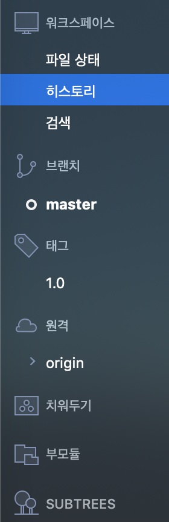
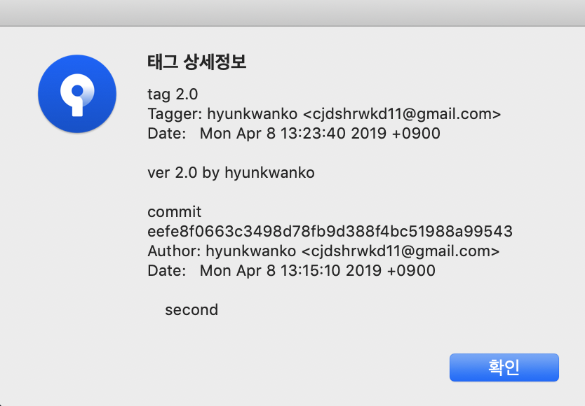

Sourcetree 실행 시 첫 화면

Local에서 디렉토리 불러오기

불러온 디렉토리 더블 클릭 시 화면

왼쪽편 Workspace에 ‘히스토리’를 눌러서 Commit 상태 확인

태그 붙이길 원하는 Commit 우클릭

태그 이름 1.0을 입력하고 추가 버튼 클릭

Commit에 태그가 추가된 것을 확인

Worksapce의 ‘태그’에도 생성된 것을 확인

새로운 Commit 생성

새로운 Commit에 2.0이라는 태그를 추가

Workspace에 2.0이 추가된 것을 확인

태그 제거하는 방법

Workspace에서 삭제하길 원하는 태그 우클릭해서 삭제 버튼 클릭

태그 제거 확인

Github 비밀번호 입력

태그가 제거된 것을 확인

메시지 포함한 태그 생성하기
태그 클릭 후 ‘고급 옵션’ 클릭, 서명 메시지에 입력 후 추가
태그 클릭 후 ‘고급 옵션’ 클릭, 서명 메시지에 입력 후 추가

Workspace에서 생성한 태그 우클릭
세부 사항 클릭
세부 사항 클릭

태그 상세정보 확인
